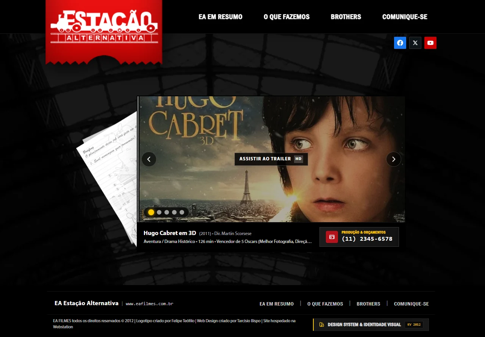
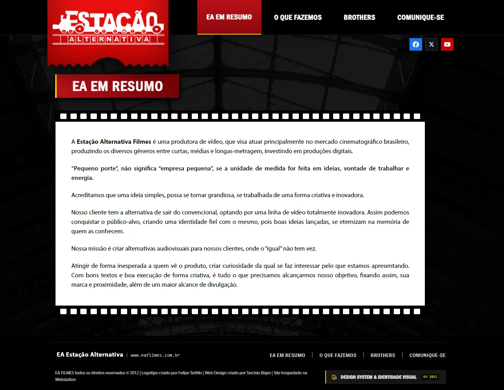
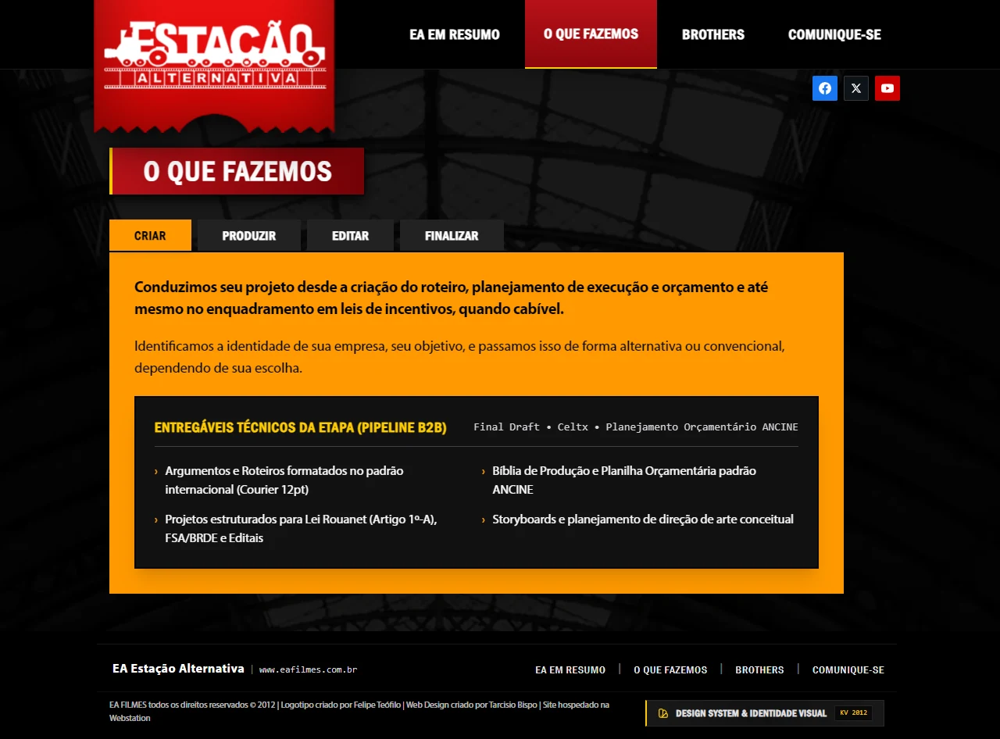
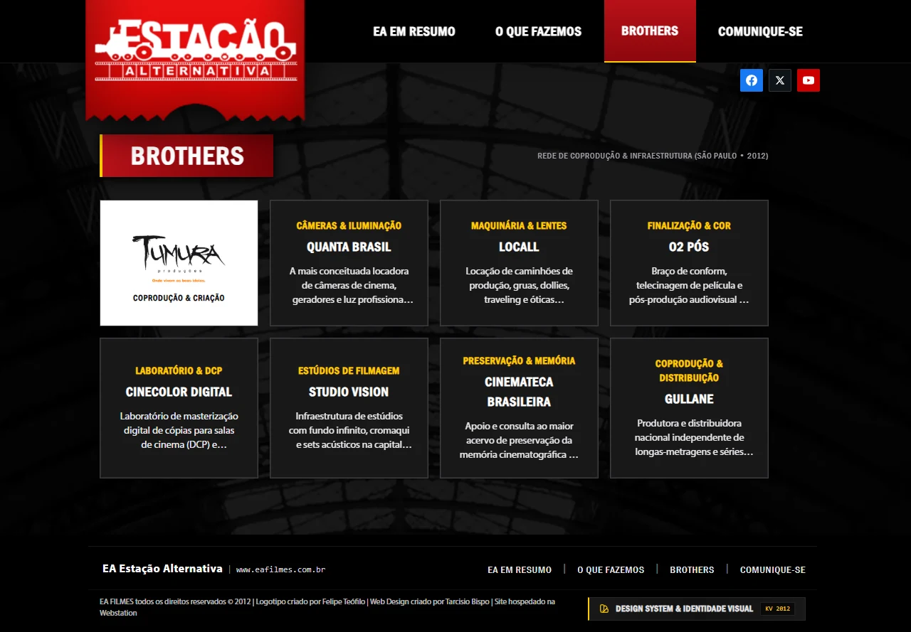
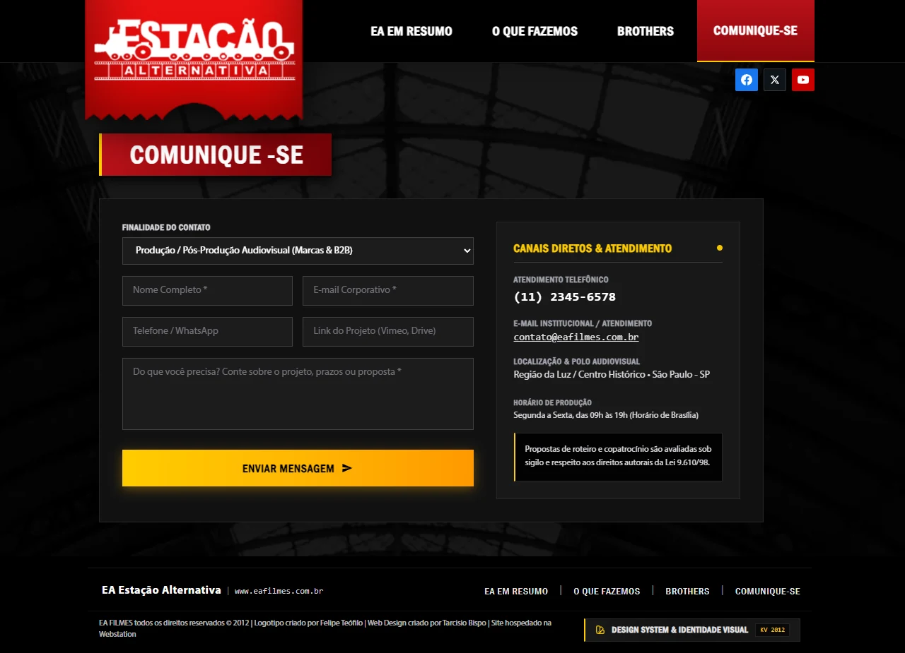
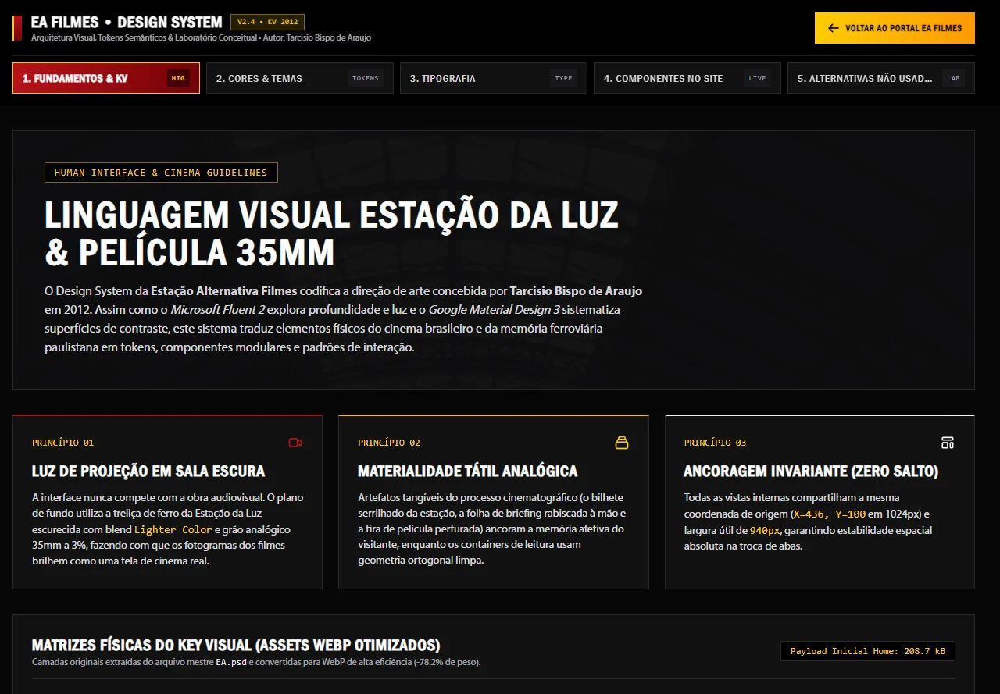

Visão Geral
A EA Filmes (Estação Alternativa Filmes) precisava de um site que funcionasse como uma extensão da sala de cinema: imersivo, autoral e focado em gerar negócios. Meu desafio foi equilibrar a atmosfera visual do universo cinematográfico com uma navegação direta, onde tanto patrocinadores quanto o público geral encontrassem o que buscavam sem esforço.
1. Desafio & Contexto
Produtoras audiovisuais costumam ter um acervo visual forte, mas muitos sites do setor acabam caindo em dois extremos: ou viram galerias de vídeo sem contexto comercial, ou adotam templates corporativos frios que apagam a personalidade do estúdio. Para a EA Filmes, o objetivo era construir um meio-termo sólido.
Metas do Projeto
- Presença Digital Autoral: Comunicar desde o primeiro olhar que a EA Filmes é uma produtora com identidade própria e visão artística.
- Imersão com Leitura Clara: Criar uma interface escura inspirada na sala de projeção, mas garantindo conforto visual e contraste alto nos textos institucionais e serviços.
- Conversão de Negócios: Conduzir o visitante de forma natural até o formulário de contato e aos canais de orçamento.
- Consistência Visual e Técnica: Estruturar um sistema de camadas e estilos bem definido para facilitar o desenvolvimento front-end e futuras atualizações do catálogo.
2. Estratégia Visual: Decisões de Negócio, Acessibilidade e Storytelling
Cada escolha visual partiu de uma necessidade prática: fortalecer a marca da produtora, destacar os filmes e manter a leitura acessível (seguindo os parâmetros de contraste da WCAG). A direção de arte combina referências físicas do cinema e da arquitetura paulistana com componentes de navegação objetivos.
Conceito e Imersão Arquitetônica (Gestalt e Branding) Clique para ver detalhes
O Enquadramento Temático (Estação da Luz e Película 35mm): Em vez de usar um fundo preto chapado, trabalhei no Photoshop a fotografia das treliças de ferro da Estação da Luz (São Paulo) escurecida com modo de mesclagem Lighter Color e uma textura sutil de película 35mm (a 3% de opacidade). Essa escolha conecta a atmosfera do site ao próprio nome da produtora ("Estação Alternativa") e ao bilhete serrilhado de estação que carrega o logotipo no topo.
Navegação Cromática e Estabilidade Espacial: Para evitar o cansaço visual de um vermelho muito aberto, as tarjas de título e o menu ativo usam um tom de Carmesim de Cinema (#B81118 a #730206) acompanhado de um filete em Ouro Projetor (#FFCC00). Nas abas de serviço ("CRIAR", "PRODUZIR", "EDITAR", "FINALIZAR"), a etapa selecionada ganha destaque em Âmbar Quente (#FF9900) com texto preto. Além disso, todas as seções internas partem exatamente da mesma posição no grid (X=456, Y=189) com 32px de respiro entre o título e o bloco de conteúdo, evitando saltos visuais durante a navegação.
Contraste Dinâmico e Respirabilidade Visual (WCAG 2.1 AA / AAA) Clique para ver detalhes
A interface alterna o clima de sala escura com áreas de leitura de alto contraste. Na seção "EA EM RESUMO", o texto institucional aparece sobre um fundo branco puro (#FFFFFF) com tipografia preta (#000000, alcançando razão de contraste 21:1 WCAG AAA), finalizado no topo e na base pelas perfurações de uma tira de filme 35mm.
Separação Clara entre Títulos e Ações: Para que os botões clicáveis não se confundissem com as tarjas vermelhas de título, reservei o Ouro e Âmbar de Projeção (#FFCC00 a #FF9900) para as ações principais (como o botão "Enviar Mensagem" e os controles ativos do carrossel), atingindo contraste de 13.6:1 (AAA) sobre o fundo escuro.
Tipografia Cinematográfica e Ergonomia de Formulário em Dark Mode Clique para ver detalhes
Campos de Formulário Confortáveis no Escuro: Em interfaces escuras, caixas de texto totalmente brancas costumam causar desconforto visual. Por isso, na seção "COMUNIQUE-SE", desenhei os campos em tom Carvão Matte (#1C1C1C) com bordas discretas e destaque de foco em Ouro Projetor (#FFCC00), mantendo a leitura agradável durante o preenchimento.
Hierarquia Tipográfica: Combinei a presença condensada da News Gothic Condensed / Franklin Gothic nos menus e cabeçalhos (remetendo aos cartazes e créditos de cinema), a legibilidade da Myriad Pro (400/600/700) nos textos corridos e a precisão de fonte monoespaçada para dados técnicos, editais e telefone.
3. Arquitetura da Interface & Diálogo B2B / B2C (Seção a Seção)
Organizei a arquitetura de informação do portal para conversar com dois perfis ao mesmo tempo: o público B2B (agências, marcas patrocinadoras, coprodutores e avaliadores de projetos em leis de incentivo como ANCINE, FSA e Lei Rouanet) e o público B2C (espectadores, curadores de mostras e profissionais do audiovisual).
Seção 1: Home (Palco Central, Folha de Briefing e Trailers em HD) Ver análise
Objetivo de negócio: Capturar o interesse do visitante nos primeiros segundos, apresentando o repertório de filmes com acesso rápido ao canal de atendimento para orçamentos.
Decisão de UX e Adaptação Mobile: O palco principal une a camada original da Folha de Briefing escrita à mão com croquis de câmera (posicionada à esquerda no desktop e adaptada como uma gaveta retrátil em telas menores que 768px, liberando toda a largura para o vídeo no celular) ao carrossel de obras de 2011 e 2012 (Hugo Cabret, O Palhaço, Tropa de Elite 2, Heleno e Xingu). O visitante pode navegar pelas setas ou pelos indicadores circulares, assistir aos trailers oficiais em modal de sala escura e visualizar o telefone comercial logo abaixo do player.

Seção 2: EA Em Resumo (Manifesto em Película 35mm Perfurada) Ver análise
Objetivo de negócio: Apresentar o posicionamento criativo da produtora ("Pequeno porte não significa empresa pequena, se a unidade de medida for feita em ideias, vontade de trabalhar e energia").
Decisão de UX: Para dar peso editorial ao manifesto, coloquei o texto sobre um quadro branco emoldurado por tiras de película cinematográfica 35mm perfurada. Isso garante leitura confortável com contraste máximo (21:1) sem sair do universo visual do cinema.

Seção 3: O Que Fazemos (Pipeline de Produção e Entregáveis B2B) Ver análise
Objetivo de negócio: Explicar com clareza as 4 etapas de trabalho da produtora para clientes corporativos, agências de publicidade e parceiros de incentivo fiscal.
Decisão de UX: Estruturei a seção em 4 abas diretas (CRIAR, PRODUZIR, EDITAR, FINALIZAR) sobre um painel âmbar (#FF9900) de leitura rápida. Abaixo do texto principal de cada aba, incluí um quadro escuro de Entregáveis Técnicos da Etapa, listando itens práticos como roteiro no padrão Courier 12pt, Planilha Orçamentária ANCINE, enquadramento na Lei Rouanet (Artigo 1º-A) e FSA/BRDE, captação em RED ONE / ARRI Alexa e masterização em DCP.

Seção 4: Brothers (Rede de Coprodução e Infraestrutura em São Paulo) Ver análise
Objetivo de negócio: Mostrar que a produtora conta com uma rede sólida de parceiros técnicos e de coprodução em São Paulo para assumir projetos de diferentes portes.
Decisão de design: Organizei uma grade 4x2 aberta pelo card branco original da Tumura Produções (extraído do objeto inteligente do PSD original), acompanhado por 7 cartões de parceiros de infraestrutura e cinema paulistano: Quanta Brasil (Câmeras e Iluminação), Locall (Maquinária e Lentes), O2 Pós (Finalização e Cor), Cinecolor Digital (Laboratório e DCP), Studio Vision (Estúdios), Cinemateca Brasileira (Preservação) e Gullane (Coprodução).

Seção 5: Comunique-se (Conversão Segmentada B2B e B2C) Ver análise
Objetivo de negócio: Facilitar o envio de briefings comerciais, propostas de coprodução ou submissão de roteiros sem burocracia.
Decisão de UX: Dividi a área em duas colunas equilibradas: à esquerda, o formulário com seletor de Finalidade do Contato (Produção B2B, Coprodução, Editais/Incentivo Fiscal ou Imprensa/Festivais), campo opcional para link de projeto (Vimeo ou Drive) e botão de envio em Ouro Projetor (#FFCC00); à direita, os canais diretos de atendimento (contato@eafilmes.com.br, telefone comercial e aviso de confidencialidade autoral conforme a Lei 9.610/98).

4. Design System Interativo & Laboratório de Alternativas (KV 2012)
Tomando como referência a organização visual de guias como Microsoft Fluent 2, Google Material Design 3 e Apple Human Interface Guidelines, criei dentro do próprio projeto uma área interativa de Design System e Identidade Visual (acessível pelo botão no rodapé do site ou pelos links deste estudo).
- Tokens Semânticos e Contraste WCAG: Mapeamento das cores usadas no site com seus respectivos valores HEX/RGB, função na interface e validação de contraste.
- Simulador Ao Vivo de Temas Alternativos Não Usados: Ferramenta interativa para testar a paleta oficial ao lado de 3 estudos cromáticos conceituais derivados do mesmo universo (Sépia Nitrato 1930: Homenagem Georges Méliès, Noir Prata Coloidal 35mm: Ref. Heleno e Sala Noturna Anamórfica).
- Laboratório de Componentes Conceituais: Galeria de componentes extras desenhados a partir da linguagem visual do projeto, como o Botão Bilhete de Ingresso Picotado (Ticket Stub CTA), o Card Claquete de Cena, a Láurea Vetorial de Festivais em SVG e a Barra de Timecode Kodak 35mm.

5. Handoff na Época (2012) & Reconstrução Interativa de Acervo
Em 2012, ferramentas de handoff em nuvem (como Figma ou Zeplin, que surgiriam apenas anos depois) ainda não existiam. A passagem de bastão entre Design e Desenvolvimento era 100% artesanal e exigia disciplina na organização do arquivo mestre no Adobe Photoshop CS5/CS6 (EA.psd). Trabalhamos em uma dupla enxuta: eu responsável pela concepção de produto, arquitetura de informação e direção de arte, ao lado de um desenvolvedor front-end.
Como o Projeto Foi Entregue em 2012 vs. Preservação Atual no Portfólio
- Organização de Camadas e Smart Objects (2012): Estruturei cada tela do arquivo
EA.psdem pastas nomeadas por seção (header,resumo,o que fazemos,brothers,comunique-se), preservando modos de mesclagem comoLighter Colorno fundo da Estação da Luz e objetos inteligentes editáveis (como a marca da Tumura Produções). - Slicing Manual e Guia de Estilos (2012): Documentei todas as famílias tipográficas (News Gothic BT Roman Condensed e Myriad Pro), códigos de cor e estados de interação, além de exportar manualmente os recortes em PNG transparente (como o bilhete serrilhado da locomotiva e a folha de briefing com croquis).
- Contexto Cultural e Técnico Fiel a 2011/2012: Todo o conteúdo preserva o momento real do cinema brasileiro e mundial em 2012, incluindo os filmes em vitrine (Hugo Cabret 3D, O Palhaço, Tropa de Elite 2, Heleno e Xingu), as câmeras digitais usadas nos sets da época (RED ONE Mysterium-X, ARRI Alexa Classic, Canon 5D Mark II e película 35mm) e as linhas de fomento vigentes (ANCINE, Artigo 1º-A, Lei Rouanet e FSA/BRDE).
- Reconstrução Interativa e Otimização WebP (-78,2%) para o Portfólio: Para que qualquer visitante possa navegar pelo projeto hoje com fluidez em telas desktop ou mobile, extraí as matrizes originais do
EA.psdconvertidas para WebP (reduzindo o peso total das imagens de2,14 MBpara324 kB) e embarquei a aplicação funcional diretamente neste estudo de caso (em./app/), junto ao seu Design System.
Resultado e Impacto
O projeto consolidou a presença digital da Estação Alternativa Filmes com uma linguagem visual própria, capaz de dialogar tanto com patrocinadores e coprodutores B2B quanto com o público apaixonado por cinema.
Aprendizados
- A interface como extensão da sala de cinema: O equilíbrio entre o fundo arquitetônico da Estação da Luz, o tom carmesim das tarjas e o amarelo de projeção nos botões guia o olhar do visitante sem cansar a vista.
- Direção de arte autoral aliada à engenharia: Preservar os elementos gráficos originais de 2012 (bilhete serrilhado, folha de briefing com croquis e película 35mm) adaptando a experiência para dispositivos móveis e documentando seu Design System mostra como design visual e viabilidade técnica se fortalecem mutuamente.